전자계산기기사 (2009-08-30 기출문제)
1과목: 시스템 프로그래밍
1. 시스템 소프트웨어에 해당하지 않는 것은?
- Compiler
- Macro Processor
- Operating System
- Word Processor
(정답률: 78%)

2. 링킹에 대한 설명으로 가장 적합한 것은?
- 실제적으로 기계 명령어와 자료를 기억 장소에 배치한다.
- 고급 언어로 작성된 원시 프로그램을 기계어로 변환한다.
- 프로그램들에 기억 장소 내의 공간을 할당한다.
- 목적 모듈간의 기호적 호출을 실제적인 주소로 변환한다.
(정답률: 60%)
3. 운영체제의 성능 평가 기준으로 거리가 먼 것은?
- 비용
- 처리 능력
- 사용 가능도
- 신뢰도
(정답률: 81%)
4. 프로그램이나 데이터가 들어갈 수 있는 크기의 빈 영역 중에서 단편화를 가장 많이 남기는 분할 영역에 배치시키는 기억장치 배치 전략은?
- First Fit
- Best Fit
- Worst Fit
- Large Fit
(정답률: 75%)
5. JCL(Job Control Language)에 대한 설명으로 옳지 않은 것은?
- 작업이 수행되는 조건 및 출력 선택 등을 제어하기 위한 언어이다.
- 작업의 실행, 종료 또는 사용 파일의 지정 등을 할 때 사용하는 작업 단계를 표시하는 언어이다.
- 기계어를 고급 언어로 변환시키는 언어이다.
- 몇 개의 명령어를 조합할 때 그 기능을 완수할 수 있다.
(정답률: 85%)
6. 매크로 프로세서가 수행하는 기본 기능에 해당하지 않는 것은?
- 매크로 구분 저장
- 매크로 확장과 인수치환
- 매크로 정의 인식
- 매크로 정의 저장
(정답률: 62%)
7. 기계어에 대한 설명으로 옳지 않은 것은?
- 컴퓨터가 직접 이해할 수 있는 언어이다.
- 기종마다 기계어가 다르므로 언어의 호환성이 없다.
- 0과 1의 2진수 형태로 표현되며 수행 시간이 빠르다.
- 고급 언어에 해당된다.
(정답률: 87%)
8. 서브루틴에서 자신을 호출한 곳으로 복귀시키는 어셈블리어 명령은?
- SUB
- MOV
- INT
- RET
(정답률: 84%)
9. 어셈블리어에 대한 설명으로 옳지 않은 것은?
- 명령 기능을 쉽게 연상할 수 있는 기호를 기계어와 1:1로 대응시켜 코드화한 기호 언어이다.
- 어셈블리어의 기본 동작은 동일하지만 작성한 CPU마다 사용되는 어셈블리어가 다를 수 있다.
- 어셈블리어로 작성한 원시 프로그램은 운영체제가 직접 어셈블한다.
- 프로그램에 기호화된 명령 및 주소를 사용한다.
(정답률: 45%)
10. 교착상태 발생의 필요충분조건이 아닌 것은?
- 상호 배제
- 선점
- 환형 대기
- 점유 및 대기
(정답률: 82%)
11. 파일 디스크립터에 대한 설명으로 옳지 않은 것은?
- 파일 제어 블록(File Control Block)이라고도 한다.
- 파일마다 독립적으로 존재하며, 시스템에 따라 다른 구조를 가질 수 있다.
- 사용자가 관리하므로 내용을 직접 참조할 수 있다.
- 파일을 관리하기 위한 시스템이 필요로 하는 파일에 대한 정보를 갖고 있다.
(정답률: 70%)
12. 절대로더(absolute loader)를 사용할 때 4가지 기능과 그 기능에 대한 수행 주체의 연결이 틀린 것은?
- Allocation - by programmer
- Linking - by assembler
- Relocation - by assembler
- Loading - by loader
(정답률: 65%)
13. 프로그램 작성시 한 프로그램 내에서 동일한 코드가 반복될 경우 반복되는 코드를 한번만 작성하여 특정 이름으로 정의한 후, 그 코드가 필요할 때마다 정의된 이름을 호출하여 사용하는 것을 무엇이라고 하는가?
- Preprocessor
- Literal
- Macro
- Extension
(정답률: 81%)
14. 다음 설명에 해당하는 디렉토리 구조는?
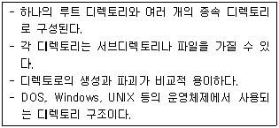
- 일반적인 그래프 디렉토리 구조
- 1단계 디렉토리 구조
- 2단계 디렉토리 구조
- 트리 디렉토리 구조
(정답률: 89%)
15. 어셈블러가 두 개의 패스(pass)로 구성되는 이유로 가장 적합한 것은?
- 입력 목적덱의 카드 종류가 많아 처리를 용이하게 하기 위해서
- 한 개의 패스로는 처리속도는 빠르나 프로그램이 커서 메모리가 많이 소요되기 때문에
- 서브프로그램이나 서브루틴을 처리하기 위해서
- 사용의 편의상 정의하기 전에 사용한 주소상수를 처리하기 위해서
(정답률: 74%)
16. 스케줄링 기법 중 HRN의 우선 순위 계산식으로 옳은 것은?
- (대기시간-서비스시간) / 서비스시간
- 서비스시간 / (대기시간+서비스시간)
- (대기시간+서비스시간) / 서비스시간
- 대기시간 / (대기시간-서비스시간)
(정답률: 82%)
17. 인터프리터에 대한 설명으로 옳지 않은 것은?
- 프로그램 실행시 매번 번역해야 한다.
- 목적 프로그램으로 번역한 후, 링킹 작업을 통해 실행 프로그램을 생성한다.
- 원시 프로그램의 변화에 대한 반응이 빠르다.
- 시분할 시스템에 유용하다.
(정답률: 67%)
18. 운영체제의 종류에 해당하지 않는 것은?
- JAVA
- UNIX
- WINDOWS NT
- LINUX
(정답률: 89%)
19. 일반적인 로더에 가장 가까운 것은?
- Direct Linking Loader
- Dynamic Loading Loader
- Absolute Loader
- Compile And Go Loader
(정답률: 85%)
20. 어떤 기호적 이름에 상수값을 할당하는 어셈블리어 명령은?
- ORG
- INCLUDE
- END
- EQU
(정답률: 81%)
2과목: 전자계산기구조
21. 오류검출코드에 대한 설명으로 틀린 것은?
- Biquinary 코드는 5비트 중 1이 2개 있다.
- 2 out of 5 코드는 코드의 각 그룹 중 1의 개수가 2개 있다.
- 링 카운터 코드는 10개의 비트로 구성되어 있으며, 모든 코드가 하나의 비트에 반드시 1을 가진다.
- Hamming 코드는 오류검출 및 교정이 가능하다.
(정답률: 53%)
22. 비동기식 버스에 대한 설명으로 틀린 것은?
- 각 버스 동작이 완료되는 즉시 연관된 다음 동작이 일어나므로 낭비되는 시간이 없다.
- 연속적 동작을 처리하기 위한 인터페이스 회로가 복잡해지는 단점이 있다.
- 버스 클록의 첫 번째 주기 동안 CPU가 주소와 읽기 제어신호를 기억장치로 보낸다.
- 일반적으로 소규모 컴퓨터 시스템에서 사용된다.
(정답률: 25%)
23. 다음 스위칭 회로의 논리식으로 옳은 것은?
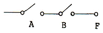
- F = A+B
- F = AㆍB
- F = A-B
- F - A/(B+A)
(정답률: 79%)
24. 중앙연산처리장치에서 마이크로 오퍼레이션이 순서적으로 일어나게 하기 위해 필요한 것은?
- 레지스터
- 누산기
- 스위치
- 제어신호
(정답률: 61%)
25. 16진수 FF0를 16의 보수(16‘s complement)로 표시하면?
- FFF
- 00F
- 010
- 000
(정답률: 54%)
26. 0-주소 인스트럭션 형식을 사용하는 컴퓨터의 특징은?
- 모든 데이터의 처리가 내장되어 있는 누산기에 의해 이루어진다.
- 연산에 필요한 자료의 주소를 모두 구체적으로 지정해 주어야 한다.
- 모든 연산은 스택에 있는 자료를 이용하여 수행한다.
- 연산을 위해 입력 자료의 주소만을 지정해 주면 된다.
(정답률: 50%)
27. 메모리로부터 읽혀진 명령어의 오퍼레이션 코드(OP-code)는 CPU의 어느 레지스터에 들어가는가?
- 누산기
- 임시 레지스터
- 연산 논리장치
- 인스트럭션 레지스터
(정답률: 58%)
28. 다음 중 잘못 연결된 것은?
- 랜덤 접근방식 - 주기억장치
- 순차 접근방식 - 자기 테이프
- 직접 접근방식 - 자기 디스크
- 내용에 의한 접근방식 - 자기 드럼
(정답률: 67%)
29. 중앙처리장치를 모듈화하여 데이터 및 명령어의 길이를 다양하게 설계하는데 적합한 프로세서는?
- 퍼지 프로세서
- 인공지능 프로세서
- 비트 슬라이스 프로세서
- RISC 프로세서
(정답률: 53%)
30. 계층적 기억장치에 대한 설명으로 틀린 것은?
- 상위 계층으로 올라갈수록 CPU에 의한 Access 빈도는 높아진다.
- 용량이 커질수록 bit당 가격이 낮아진다.
- 용량이 커질수록 Access 시간이 짧아진다.
- Access 속도가 빠를수록 bit당 가격도 높아진다.
(정답률: 50%)
31. 명령어 형식에서 각 필드의 길이를 결정하는데 영향을 주는 요소와 가장 거리가 먼 것은?
- 주소 지정방식의 수
- 클록(clock) 속도
- 오퍼랜드의 수
- 주소 영역
(정답률: 56%)
32. 다중처리기에 대한 설명으로 틀린 것은?
- 수행속도 등의 성능 개선이 목적이다.
- 하나의 복합적인 운영체제에 의하여 전체 시스템이 제어된다.
- 각 프로세서의 기억장치만 있으며 공유 기억장치는 없다.
- 한 작업을 여러 개의 프로세서로 나누어서 서로 다른 처리기에 할당하여 동시에 수행한다.
(정답률: 88%)
33. 데이터를 전송할 때 입ㆍ출력 버스를 통하여 프로세서와 주변장치 사이에서 이루어지며, 데이터의 전송을 확인하기 위해서 상태레지스터를 사용하는 전송 모드는?
- 프로그램된 I/O
- 인터럽트에 의한 I/O
- 직접메모리접근(DMA)
- 간접메모리접근(IMA)
(정답률: 44%)
34. 하드웨어의 특성상 주기억장치가 제공할 수 있는 정보전달의 능력 한계를 무엇이라 하는가?
- 주기억장치 밴드폭
- 주기억장치 접근률
- 주기억장치 접근 실패
- 주기억장치 사용의 편의성
(정답률: 67%)
35. 다음 중 I/O 제어기의 주요 기능이 아닌 것은?
- CPU와의 통신을 담당한다.
- I/O 장치와의 통신을 담당한다.
- 데이터 버퍼링(data buffering) 기능을 수행한다.
- 버스 중재를 한다.
(정답률: 60%)
36. 프로그램에 의해 제어되는 동작이 아닌 것은?
- input/output
- branch
- status sense
- RNI(fetch)
(정답률: 39%)
37. 10진수 +426을 언팩 10진수 형식(unpacked decmal format)으로 표현하면?
- F4F2C6
- F4F2D6
- 4F2F6C
- 4F2F6D
(정답률: 53%)
38. 16진수 A4D를 8진수로 바꾸면?
- 5115
- 5116
- 5117
- 5118
(정답률: 67%)
39. 10진수 3은 3-초과 코드(Excess-3 code)에서 어떻게 표현되는가?
- 0011
- 0100
- 0101
- 0110
(정답률: 60%)
40. DMA에 관한 설명 중 틀린 것은?
- 입출력 제어 방식의 한 형태이다.
- DMA 제어기는 주기억장치의 버스를 사용하기 위해서 CPU와 경쟁해서 주기억장치 사이클을 사용(사이클 훔침)한다.
- 인터럽트는 다른 프로그램을 실행하기 위해서 CPU를 비워야 하나 DMA는 CPU가 1사이클 동안만 정지하므로 비울 필요가 없다.
- DMA 제어기는 하나의 입출력 명령에 의해 여러개의 데이터 블록을 입출력할 수 있으므로 많은 입출력 명령이 필요 없다.
(정답률: 52%)
3과목: 마이크로전자계산기
41. 일반적으로 프로그램카운터(PC)의 값과 명령어의 주소 부분에 있는 주소를 가지고 유효 주소를 찾는 주소지정방식은?
- 즉시 주소지정방식
- 상대 주소지정방식
- 간접 주소지정방식
- 레지스터 주소지정방식
(정답률: 34%)
42. 소스 프로그램의 컴파일이 불가능한 소규모 마이크로컴퓨터에서 이를 컴파일하기 위해 보다 대용량의 컴퓨터를 이용, 컴파일 작업을 수행하고자 한다. 이 때 사용되는 컴파일러는?
- Macro Compiler
- Absolute Compiler
- Cross Compiler
- Relocation Compiler
(정답률: 77%)
43. 대부분의 마이크로프로세서 CPU 소켓 인터페이스는 어떤 구조를 기반으로 하는가?
- PGA 구조
- DIP 구조
- BGA 구조
- LGA 구조
(정답률: 53%)
44. 프로그램 제어에 의한 전송(programmed I/O) 방식에서 중앙처리 장치와 입출력 기기간에 주고받는 정보로서 필수적인 정보가 아닌 것은?
- 우선순위(priority)
- 데이터(data)
- 상태(status)
- 커맨드(command)
(정답률: 20%)
45. 다음 중 I/O 버스를 통하여 접수된 command에 대한 해석이 이루어지는 곳은?
- 커맨드 디코더
- 상태 레지스터
- 버퍼 레지스터
- 인스트럭션 레지스터
(정답률: 60%)
46. 10진수 23과 -46을 2의 보수 표현 방법에 의해 8bit로 표현한 것은?
- 10010111, 01101001
- 00010111, 11010010
- 00110111, 11001001
- 10110111, 01001001
(정답률: 50%)
47. 캐시 메모리에 대한 설명으로 틀린 것은?
- 캐시 액세스 충돌 제거를 위해 분리 캐시를 사용한다.
- CPU와 주기억장치 사이에 놓인다.
- 캐시 메모리의 액세스 타임은 주기억 장치의 액세스 타임보다 늦다.
- 캐시 메모리가 있는 경우 CPU가 메모리에 접근할 때 먼저 캐시 메모리를 조사한다.
(정답률: 43%)
48. 시스템 동작 개시 후 최초로 주기억 장치에 프로그램을 로드하는 것은?
- IPL(Initial Program Load)
- Assembler
- Listing Program
- Utility Program
(정답률: 69%)
49. 플래그(flag) 레지스터가 나타내는 상태가 아닌 것은?
- carry의 발생
- 연산 결과의 부호
- 인덱스(index) 레지스터의 증감 상태
- overflow의 발생
(정답률: 34%)
50. 8비트 마이크로프로세서의 경우 일반적으로 내부 버스와 레지스터의 크기는?
- 4[bit]
- 8[bit]
- 16[bit]
- 32[bit]
(정답률: 54%)
51. JTAG(Joint Test Action Group) 인터페이스에서 핀으로 칩 안에 구성되지 않는 것은?
- TDI(데이터 입력)
- TMS(모드)
- TTS(전송)
- TRST(리셋)
(정답률: 36%)
52. M×N의 명칭을 가지는 RAM에 대한 설명 중 틀린 것은?
- 저장 가능한 전체비트(bit) 수가 M×N 개이다.
- N비트의 데이터가 입력 또는 출력된다.
- 어드레스의 비트수는 M에 의해 결정된다.
- M은 read 동작에 N은 write 동작에만 관계된다.
(정답률: 50%)
53. 비동기식 직렬 입ㆍ출력 방식에 속하는 것은?
- EIA RS-232C
- GPIB(General Purpose Interface Bus)
- HDLC(High-Level Data Link Control)
- BSC(Binary Synchronous Communication)
(정답률: 47%)
54. 다음 중 CPU에 속하지 않는 것은?
- ALU
- general purpose register
- contorl unit
- PIO(parallel input output)
(정답률: 27%)
55. 멀티미디어 응용프로그램들의 실행을 좀 더 빠르게 할 수 있도록 설계된 프로세서는?
- celeron
- MMX
- centrino
- AMD
(정답률: 50%)
56. 프로그램 작성시 순서도를 작성하는 이유로 가장 옳은 것은?
- 프로그램의 논리 체계 설정
- 프로그램 작성시 반드시 필요
- 컴파일과 실행에 필요
- 시스템 분석에 필요
(정답률: 69%)
57. 마이크로프로세서는 클록(clock)에 의해제어된다. 이 클록을 발생하는 회로는?
- 수정 발진
- LC 발진
- RC 발진
- 마이크로 발진
(정답률: 40%)
58. 마이크로컴퓨터용 소프트웨어 개발 과정이 옳은 것은?
- 요구분석 → 프로그램 설계 → 코딩 → 테스트 → 유지보수
- 요구분석 → 코딩 → 프로그램 설계 → 유지보수 → 테스트
- 프로그램 설계 → 요구분석 → 코딩 → 유지보수 → 테스트
- 코딩 → 요구분석 → 프로그램 설계 → 유지보수 → 테스트
(정답률: 67%)
59. 마이크로컴퓨터와 외부장치 간에 적외선을 이용하여 데이터를 주고 받는 방식은?
- 블루투스(Bluetooth)
- IrDA
- USB
- IEEE1394
(정답률: 64%)
60. 주루틴(main routine)의 호출명령에 의하여 명령실행 제어만이 넘겨져서 고유의 루틴(routine) 처리를 행하도록 하는 것은?
- 열린 서브루틴(open subroutine)
- 폐쇄 서브루틴(closed subroutine)
- 매크로(macro)
- 벡터(vector)
(정답률: 59%)
4과목: 논리회로
61. 다음 회로는 일반적인 수차회로의 모델이다. 여기서 "A"와 "B"가 뜻하는 것은?
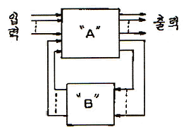
- A : 조합회로+플립플롭, B : 조합회로
- A : 플립플롭, B : 조합회로
- A : 조합회로, B : 플립플롭
- A : 플립플롭, B : 조합회로+플립플롭
(정답률: 43%)
62. 주인의 역할과 종의 역할을 하는 2개의 별개 플립플롭으로 구성된 플립플롭은?
- JK 플립플롭
- T 플립플롭
- MS 플립플롭
- D 플립플롭
(정답률: 62%)
63. 불 함수값
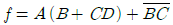
일 때, NAND 게이트만을 사용하여 조합회로를 구성한다면 필요한 게이트의 수는? (단, 모든 NAND 게이트는 최대 2입력 NAND 게이트임)- 6
- 7
- 8
- 9
(정답률: 48%)
64. Wired-OR로 쓸 수 있는 TTL의 출력단은?
- Open-collector
- Totem-pole
- Three-state
- 없다.
(정답률: 50%)
65. 5단의 링 카운터에 해당되는 % 듀티 사이클은?
- 50[%]
- 25[%]
- 20[%]
- 10[%]
(정답률: 63%)
66. 다음 민텀의 합형으로 표현된 불 함수를 카르노도를 이용하여 간략화한 것 중 가장 간단한 논리식은?
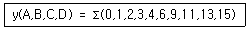
- A B C + B C D
- B C + A B D + A B C
- A' B' + A' D' + A D
- A + B C D
(정답률: 57%)
67. ROM(Read Only Memory)의 주요 구성 요소는?
- 인코더와 OR 게이트
- 디코더와 OR 게이트
- 인코더와 AND 게이트
- 디코더와 AND 게이트
(정답률: 48%)
68. 다음은 어떤 기능을 갖춘 회로인가?
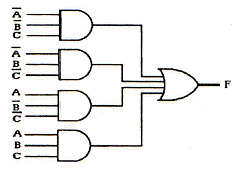
- 다수결 회로
- matrix 회로
- 비교 회로
- parity 발생회로
(정답률: 39%)
69. 10진수 -0.75를 고정 소수점 방식(fixed-point system)에 의해 부호 비트와 크기 비트를 사용하여 나타내면?
- 0.01
- 0.11
- 1.01
- 1.11
(정답률: 45%)
70. 시프트 레지스터(Shift Register)를 만드는데 가장 적합한 플립플롭은?
- RS 플립플롭
- RST 플립플롭
- D 플립플롭
- T 플립플롭
(정답률: 43%)
71. 다음 중 병렬 가산기의 특징으로 옳은 것은?
- 가격이 직렬 가산기에 비해 저렴하다.
- carry bit를 위한 기억소자가 필요하다.
- 입력 단자수가 n개이라면 출력 단자수는 2n개이다.
- 연산 처리가 직렬 가산기에 비해 빠르다.
(정답률: 59%)
72. 수식 (6375)8 + (BAF)16 = (X)2에서 X는?
- 1100110100110
- 1100010101100
- 1010010101100
- 1010110101100
(정답률: 42%)
73. MSI와 LSI에 의해 조합논리회로를 설계하는 방법 중 일반적인 성질을 이용하지 않는 것은?
- Decoder
- Multiplexer
- RAM
- PLA
(정답률: 46%)
74. 다음 회로의 게이트 출력 X의 값으로 맞는 것은?
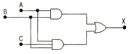
- X = AB
- X = ABC
- X = AB+BC
- X = AB+C
(정답률: 50%)
75. 3비트에 대한 패리티를 발생시키는 even parity generator는?
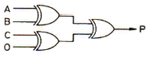
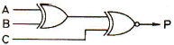
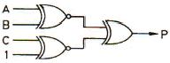
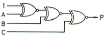
(정답률: 56%)
76. 다음 회로에서 Q의 값은?
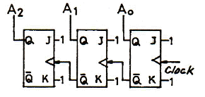
- Clock에 따라 1씩 증가된다.
- Clock에 따라 1씩 감소된다.
- A2 A1 A0 값이 보수가 된다.
- A2 A1 A0 값의 임의의 수를 발생한다.
(정답률: 29%)
77. 부호 및 절대값 코드를 사용하여 full scale이 ±10[V]의 10[bit] 양극성 D/A 변환기가 있다. 디지털 입력 1110000000 에 대한 출력 값은?
- +7.5[V]
- -7.5[V]
- +8.5[V]
- -8.5[V]
(정답률: 45%)
78. PLA(Programmable Logic Array)에 관한 설명으로 틀린 것은?
- 프로그램 가능한 AND 및 OR 게이트 군이 내장된 소자이다.
- 다중입력과 다중출력을 갖는 논리함수를 구현하는데 편리한 소자이다.
- 한정된 개수의 입출력 단자를 가지는 한 개의 Chip으로 제조되어 있다.
- 산술연산회로를 구현하는데 주로 쓰이도록 연산기능을 내장하고 있다.
(정답률: 17%)
79. 다음의 진리표에 해당하는 논리식은?
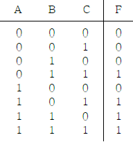
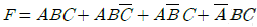
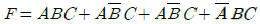
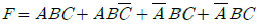
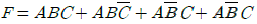
(정답률: 56%)
80. 다음 전가산기의 설명 중 틀린 것은?
- 입력은 가수 A, 피가수 B, 입력 자리 올림수 Ci로구성
- 출력 합의 식은 (A⊕B)⊕Ci
- 출력 자리 올림수의 식은 (A+B)Ci+AB
- 반가산기 2개와 OR gate를 이용하여 전가산기 구성
(정답률: 48%)
5과목: 데이터통신
81. 위상을 이용한 디지털 변조 방식으로 옳은 것은?
- ASK
- FSK
- PSK
- PCM
(정답률: 56%)
82. 다음 중 DTE에서 출력되는 디지털 신호를 디지털 회선망에 적합한 신호형식으로 변환하는 장치로 옳은 것은?
- MODEM
- CCU
- DCS
- DSU
(정답률: 55%)
83. 문자의 시작과 끝에 각각 START 비트와 STOP 비트가 부가되어 전송의 시작과 끝을 알려 전송하는 방식은?
- 비동기식 전송
- 동기식 전송
- 전송 동기
- PCM 전송
(정답률: 63%)
84. 다수의 타임 슬롯으로 하나의 프레임이 구성되고, 각 타임 슬롯에 채널을 할당하여 다중화 하는 것은?
- TDM
- CDM
- FDM
- CSM
(정답률: 71%)
85. 점대점 링크를 통하여 인터넷 접속에 사용되는 프로토콜인 PPP(Point to Point Protocol)에 대한 설명으로 옳지 않은 것은?
- 재전송을 통한 오류 복구와 흐름제어 기능을 제공한다.
- LCP와 NCP를 통하여 유용한 기능을 제공한다.
- IP 패킷의 캡슐화를 제공한다.
- 동기식과 비동기식 회선 모두를 지원한다.
(정답률: 17%)
86. 아날로그-디지털 부호화 방식인 송신측 PCM(Pulse Code Modulation) 과정을 순서대로 바르게 나타낸 것은?
- 표본화(Sampling) → 양자화(Quantization) → 부호화(Encoding)
- 양자화(Quantization) → 부호화(Encoding)→ 표본화(Sampling)
- 부호화(Encoding) → 양자화(Quantization) → 표본화(Sampling)
- 표본화(Sampling) → 부호화(Encoding) → 양자화(Quantization)
(정답률: 67%)
87. 다음 중 X.25 프로토콜의 계층 구조에 포함되지 않는 것은?
- 패킷 계층
- 링크 계층
- 물리 계층
- 네트워크 계층
(정답률: 55%)
88. 컴퓨터를 이용한 정보통신 시스템에서 정확한 데이터를 주고받기 위해서는 컴퓨터 간의 미리 정해진 약속이 필요하다. 이러한 약속을 무엇이라 하는가?
- Topology
- Protocol
- OSI 7 layer
- DNS
(정답률: 83%)
89. HDLC(High-level Data Link Control)의 세가지 동작모드 중 다음 설명에 해당하는 것은?
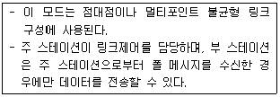
- NRM
- ARM
- ABM
- NBM
(정답률: 53%)
90. 다음 설명에 해당하는 IP 주소의 클래스로 옳은 것은?
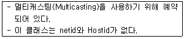
- A 클래스
- B 클래스
- C 클래스
- D 클래스
(정답률: 78%)
91. 다음 그림과 같은 전송 방식으로 옳은 것은?
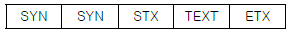
- 문자 위주 동기방식
- 비트지향형 동기방식
- 조보식 동기방식
- 프레임 동기방식
(정답률: 78%)
92. TCP/IP 관련 프로토콜 중 IP 프로토콜을 보완하기 위한 인터넷 계층 프로토콜로 옳지 않은 것은?
- ICMP
- ARP
- RARP
- SNMP
(정답률: 63%)
93. 데이터를 전송할 때에는 항상 정보에 대한 보안문제가 대두되며, 이를 해결하기 위해 다양한 암호화 방식이 사용된다. 다음이 설명하고 있는 암호화 방식을 사용하는 것은?
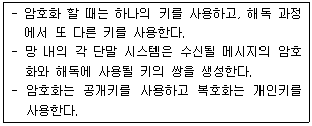
- DES
- RSQ
- SEED
- IDEA
(정답률: 48%)
94. 블루투스(Bluetooth) 프로토콜 구조 중 오류제어, 인증(Authentication), 암호화를 정의하는 것은?
- Application Layer
- L2CAP Layer
- RF Layer
- Tunnel Layer
(정답률: 53%)
95. OSI 참조 모델 중 각 계층의 기능 설명이 옳지 않은 것은?
- 물리 계층 - 전기적, 기능적, 절차적 규격에 대해 규정
- 데이터링크 계층 - 흐름 제어와 에러 복구
- 네트워크 계층 - 경로 설정 및 폭주 제어
- 전송 계층 - 코드 변환, 구문 검색
(정답률: 87%)
96. 보오(baud) 속도가 1400 이고, 한 번에 3개의 비트를 전송할 때 데이터 신호속도(bps)는 얼마인가?
- 1200
- 2800
- 4200
- 5600
(정답률: 74%)
97. HDLC 프레임 구성에서 프레임 검시 시퀀스(FCS) 영역의 기능으로 옳은 것은?
- 전송 오류 검출
- 데이터 처리
- 주소 인식
- 정보 저장
(정답률: 36%)
98. 다음 설명에 해당되는 ARQ 방식은?
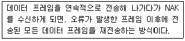
- Stop-and-Wait ARQ
- Selective-Repeat ARQ
- Go-back-N ARQ
- Sequence-Number ARQ
(정답률: 71%)
99. TCP/IP 모델 중 응용계층 프로토콜에 해당하지 않은 것은?
- TELNET
- SMTP
- ROS
- FTP
(정답률: 37%)
100. 매체 접근 제어 기법 중 CSMA/CD 방식에 대한 설명으로 옳지 않은 것은?
- 각 호스트들이 전송매체에 경쟁적으로 데이터를 전송하는 방식이다.
- 전송된 데이터는 전송되는 동안에 다른 호스트의 데이터와 충돌할 수 있다.
- 토큰 패싱 방식에 비해 구현이 비교적 간단하다.
- 지연시간의 예측이 용이하고, 실시간 요구하는 용도에 매우 적합하다.
(정답률: 36%)